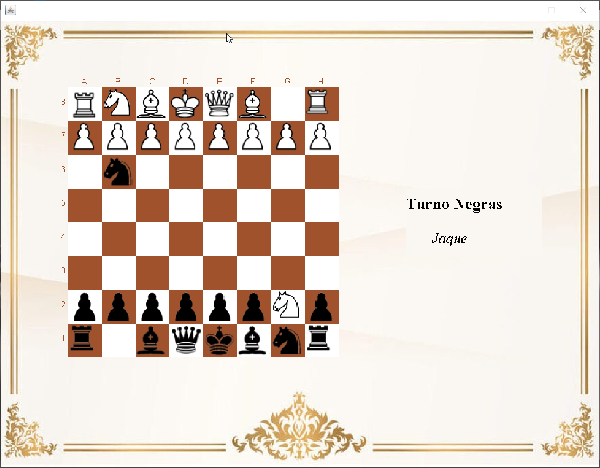

El siguiente es el tablero de ajedrez. Cuando se abre, la partida comienza automáticamente. Para mover las fichas, se debe pulsar en la ficha que se desea mover y después pulsar en la casilla de destino. Para que el movimiento se produzca, debe seguir las normas del juego, que se detallan más adelante. A la izquierda del tablero se ve de quién es el turno, y si se ha hecho 'jaque'.
El juego es por turnos entre dos contrincantes, el jugador con las piezas blancas mueve primero. La colocación inicial de las piezas es especular para ambos bandos. El tablero debe estar colocado con la casilla oscura en la esquina izquierda, los peones en la segunda fila, la reina y el rey en las casillas centrales de la primera fila, los alfiles, los caballos y las torres en ambos costados. El Rey puede moverse en todas las direcciones adyacentes. La Torre se mueve en línea recta horizontal o vertical en cualquier número de casillas libres hasta llegar al final del tablero o ser bloqueada por otra pieza. El Alfil se mueve en línea recta diagonal, puede moverse tantas casillas como desee hasta llegar al final del tablero o ser bloqueado por otra pieza. La Reina es la pieza más poderosa, puede moverse en cualquier dirección horizontal, vertical o diagonal en cualquier número de casillas libres. El Caballo es la única pieza que puede saltar sobre otras piezas, se mueve en forma de «L» (dos casillas en dirección horizontal o vertical y una en ángulo recto). El Peón se mueve solo hacia adelante, a excepción de su primera jugada, en la cual puede avanzar dos casillas. El Peón captura en diagonal. La Promoción del Peón es cuando este logra alcanzar el final del tablero y se convierte en la pieza que se elija entre Reina, Torre, Alfil o Caballo. El Enroque se realiza con el Rey y una Torre, requiere que ambas piezas no hayan sido movidas previamente, no haya piezas entre ellas y que el Rey no esté en jaque. Hay dos tipos de enroque: corto y largo. El Jaque es una situación en la que el Rey está bajo amenaza de ser capturado por una pieza del oponente, pero tiene la posibilidad de salir de esta situación. El Rey debe salir de esta situación en su próximo movimiento. El objetivo del juego es acorralar al rey del oponente hasta lograr que no tenga escapatorias y lo que se denomina Jaque Mate, lo que termina la partida.